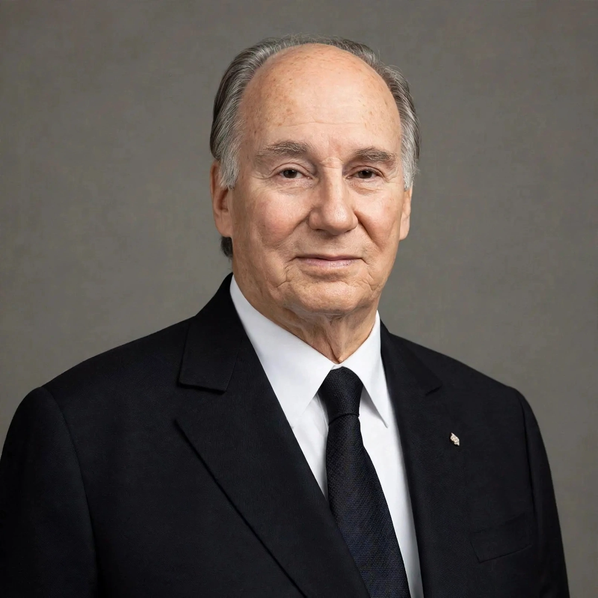

| Born | Prince Karim Al-Husseini, 13 December 1936, Geneva, Switzerland |
|---|---|
| Died | 4 February 2025 (aged 88), Lisbon, Portugal |
| Office | 49th Imam of the Nizari Ismaili Muslims (1957–2025) |
| Predecessor | Aga Khan III (grandfather) |
| Successor | Aga Khan V (Rahim Al-Hussaini) |
| Education | Harvard University (BA, 1959) |
Prince Karim Al-Husseini (13 December 1936 – 4 February 2025), known as the Aga Khan IV, was the 49th hereditary Imam of the Nizari Ismaili Muslims, a denomination of Shia Islam with an estimated 15 million followers in more than 25 countries. He succeeded his grandfather, Aga Khan III, in 1957 at the age of 20, while an undergraduate at Harvard.
Born in Geneva to Prince Aly Khan and Joan Yarde-Buller, Karim spent his childhood in Nairobi, Kenya, attended Le Rosey in Switzerland, and graduated from Harvard in 1959 with a degree in Islamic history. His grandfather's will unexpectedly passed over Karim's father and named the young prince Imam, citing the changed conditions of the atomic age.
As Imam, the Aga Khan interpreted the faith for his followers while building one of the world's largest private development networks, the Aga Khan Development Network (AKDN), which works in health, education, rural development, and economic development, largely in Africa and Asia and largely irrespective of the beneficiaries' faith. Its agencies include Aga Khan University (founded 1983) and the Aga Khan Foundation.
He founded the Aga Khan Award for Architecture in 1977, the largest architectural prize of its kind, and took a personal interest in Islamic architecture and cultural heritage through the Aga Khan Trust for Culture. In 2014 the Global Centre for Pluralism in Ottawa and the Aga Khan Museum in Toronto opened under his patronage; in 2018 the seat of the Ismaili Imamat (the Diwan) was formally established in Lisbon.
The Aga Khan was a prominent owner-breeder of Thoroughbred racehorses, continuing a family tradition; his horses won the Epsom Derby five times, including with Shergar (1981), whose theft in 1983 was never solved. His business interests included media (co-founding Kenya's Nation Media Group), tourism, and industry.
The Aga Khan IV died in Lisbon on 4 February 2025, aged 88. His will designated his eldest son, Prince Rahim Al-Hussaini, as his successor, the 50th Imam, Aga Khan V.
From Wikipedia, the free encyclopedia. Recreated article.